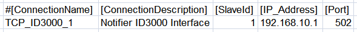
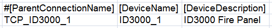
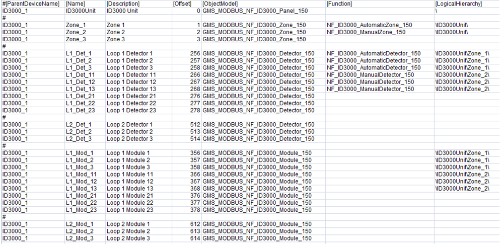

Notifier ID3000 Configuration (CSV) File
To integrate a NOTIFIER® ID3000 fire panel into Desigo CC you must first prepare a textual configuration file in CSV (comma separated values) format that defines the data structure for the panel.
To do this, use Microsoft Excel or a text editor to edit the configuration file.
NOTE: Use a comma (,) as separator.
You can then use this file to import the configuration.
For reference information about the Modbus configuration CSV file, see CSV File for Modbus Device Import.
To obtain pre-configured CSV sample files to edit, contact the Technical Support team.
Having pre-configured CSV files with offsets already defined for each object reduces the risk of reading wrong addresses from the management station. Also, having examples of function mapping already defined can be useful when adding new points and starting from an example of an existing point type included in the CSV file with functions defined.
Pre-configured sample files can be used to create custom configuration files by adding or removing zone, detectors, or modules according to the specific configuration.
Additionally, since the device points are imported into Management View as a flat list, pre-configured sample files also provide a predefined logical view that can be used for the configuration required on the field site.
As for the logical view, pre-configured sample files can be also modified to automatically create a user-defined view out of the import. This part is not provided in pre-configured CSV files because user views strictly depend on the customer’s requirements that can be easily added.
ID3000 Configuration File Sections
Section | Description |
[Connections] | Communication channels between ID3000 and Desigo CC. 1 interface for each device must be defined. |
[Devices] | ID3000 Fire Panel. |
[Points] | Physical points. |
ID3000 Connections Data
The [Connections] section comprises the following data:
Data | Description |
[ConnectionName] | Interface name. Special characters are not allowed. |
[ConnectionDescription] | Interface description to display in System Browser. |
[SlaveId] | ID3000 Modbus subordinate address. |
[IP_Address] | Interface IP address. |
[Port] | TCP Modbus port. Default value: 502. |
[Alias] | Not used. |
[FunctionName] | Not used. |
[Discipline ID] | Not used. |
[Subdiscipline ID] | Not used. |
[Type ID] | Not used. |
[Subtype ID] | Not used. |

ID3000 Devices Data
The [Devices] section comprises the following data:
Data | Description |
[ParentConnectionName] | Name of the interface assigned to this device. |
[DeviceName] | Device name. |
[DeviceDescription] | Device description to display in System Browser. |
[ObjectModel] | Not used. |
[Alias] | Not used. |
[Function Name] | Not used. |
[Discipline ID] | Not used. |
[Subdiscipline ID] | Not used. |
[Type ID] | Not used. |
[Subtype ID] | Not used. |
[LogicalHierarchy] | Used to create a hierarchy in the logical view. |
[UserHierarchy] | Used to create a hierarchy in the user-defined view. |

ID3000 Points Data
The [Points] section comprises the following data:
Data | Description |
[ParentDeviceName] | Name of the device to which the point is connected. |
[Name] | Point name. Special characters are not allowed. |
[Description] | Point description to display in System Browser. |
[FunctionCode] | Not used. |
[Offset] | Used in combination with the import rules table to achieve the correct value of the register. The following rules apply to ID3000 CSV configuration files:
|
[SubIndex] | Not used. |
[DataType] | Not used. |
[Direction] | Not used. |
[Object Model] | Name of the object model linked to this point.
NOTE: In case any modules are used to integrate 3rd party detectors, you can use the object model GMS_MODBUS_NF_ID3000_Detector_150 instead of GMS_MODBUS_NF_ID3000_Module_150. As a result, the activation of these points will generate a Life Safety event instead of an Information event. |
[Property] | Not used. |
[Alias] | Not used. |
[Function] | “Function name” as defined in the Function library block of the ID3000 Library. Used to automatically associate the Function to the Point Instance during the import of the CSV file. |
[Discipline ID] | Not used. |
[Subdiscipline ID] | Not used. |
[Type ID] | Not used. |
[Subtype ID] | Not used. |
[Min] | Not used. |
[Max] | Not used. |
[MinRaw] | Not used. |
[MaxRaw] | Not used. |
[MinEng] | Not used. |
[MaxEng] | Not used. |
[Resolution] | Not used. |
[Eng Unit] | Not used. |
[StateText] | Not used. |
[AlarmClass] | Not used. |
[AlarmType] | Not used. |
[AlarmValue] | Not used. |
[EventText] | Not used. |
[NormalText] | Not used. |
[UpperHysteresis] | Not used. |
[LowerHysteresis] | Not used. |
[LogicalHierarchy] | Used to create a hierarchy in the logical view. |
[UserHierarchy] | Used to create a hierarchy in the user-defined view. |
